Methodology#
Problem statement#
We consider the problem
where \(f\) and/or \(g\) are non-convex, so that the problem has several local minima. A local solver returns the minimum of the basin containing its starting point, whereas a global method has to explore the whole design space.
Separation of exploration and exploitation#
The method separates two tasks that a single algorithm would otherwise have to balance:
exploration, i.e. the selection of the region to be searched among a finite set of regions;
exploitation, i.e. the solution of the original problem within one region by a local gradient-based algorithm.
The regions result from a Cartesian subdivision of the design space: each component \(x_j\) is divided into \(m_j\) contiguous intervals \([l_{j,k}, u_{j,k}]\), whose Cartesian product defines \(\prod_j m_j\) boxes.
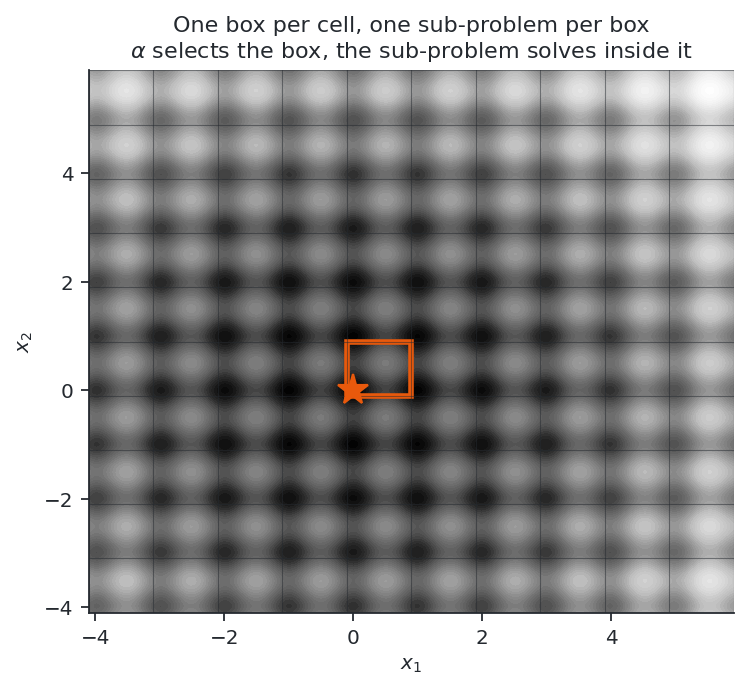
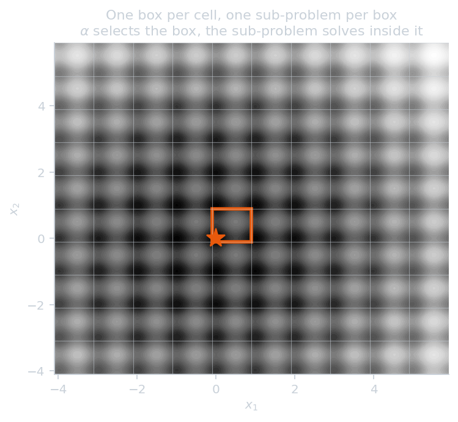
Figure 1. Cartesian subdivision of a two-dimensional design space.
The selection of a box is a categorical decision and the optimization within it a continuous one, so that the problem becomes a mixed-integer nonlinear program, which is solved by a bi-level outer approximation.
Encoding of the box selection#
One categorical variable is associated with each component of the design variables and encoded as a one-hot vector \(\alpha_{j,k} \in \{0,1\}\) with \(\sum_k \alpha_{j,k} = 1\).
Important
The master problem has \(\sum_j m_j\) binary variables, a number linear in the number of components, whereas the number of boxes \(\prod_j m_j\) is exponential. The Cartesian product is never enumerated.
The bounds of the selected box are affine functions of \(\alpha\):
Growth with the dimension#
The number of boxes, \(\prod_j m_j\), grows exponentially with the number of variables, whereas the master works with the \(\sum_j m_j\) one-hot binaries, a number that grows linearly. Five variables with ten subdivisions each give \(100\,000\) boxes and \(50\) binaries.
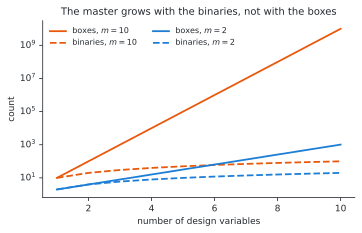
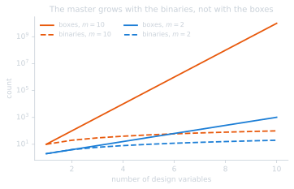
Figure 2. Number of boxes and number of binaries against the number of variables.
A budget determines the number of sub-problems that can be solved, typically a few dozen for a few thousand evaluations. The relevant quantity for the usability of a subdivision is therefore the ratio between the number of coefficients of the cut model, \(\sum_j m_j\), and the number of affordable cuts. A fine subdivision is not limited by its number of boxes but by the number of coefficients of its cut model.
This ratio gives an upper limit on the density: in five variables, with a budget of about fifty sub-problems, ten subdivisions per variable (fifty binaries, one hundred thousand boxes) gave the best results, and sixteen (eighty binaries) markedly worse results.
The lower limit is determined by the landscape: the subdivision must separate the basins, so that a problem whose minima are one unit apart over a range of ten requires ten subdivisions and is not solved with two. The interval between the two limits may be empty, when a subdivision fine enough to separate the basins already has more coefficients than the budget can identify; the method is not applicable in that case.
Refining beyond the basins also degrades the results. A box that contains no minimum returns a value and a post-optimal sensitivity corresponding to a constrained solution on its boundary, which carry no information on the location of the minimum, so that an excessively fine subdivision degrades the ranking of the boxes. These three effects are quantified in the results.
Bi-level problem#
The problem is reformulated as
level |
variables |
solver |
role |
|---|---|---|---|
main |
box selection \(\alpha\) |
mixed-integer master, outer approximation |
exploration |
sub |
\(x\) within the box |
local nonlinear solver |
exploitation |
Table 1. The two levels of the problem.
This is the Benders formulation of
gemseo-bilevel-outer-approximation,
with the box-selection variables as the categorical variables of the main
problem.
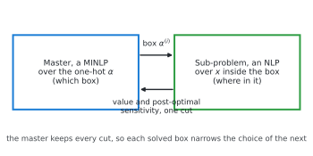
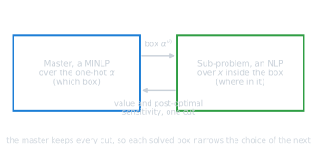
Figure 3. Exchanges between the master and the sub-problem.
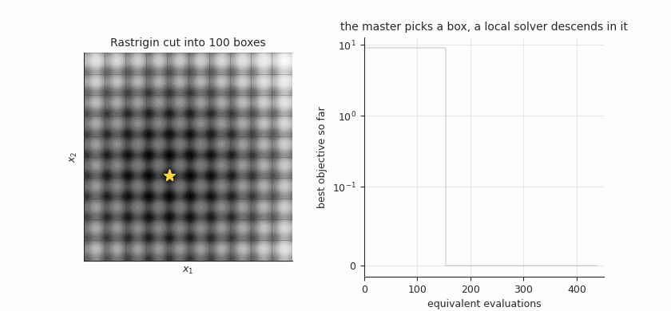
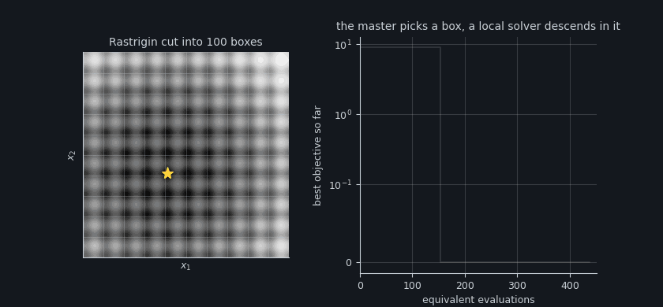
Figure 4. Iterations of the method on the Rastrigin function in two dimensions:
box selected by the master (orange) from the cuts of the boxes already solved
(blue), and path of the local solver from the centre of the box. The animation
is generated by python docs/figures.py solve.
In the run of Figure 4, none of the first six boxes improves on the local minimum of \(8.95\) returned by the first box; the seventh returns the global minimum, after \(154\) evaluations. The incumbent (green) no longer changes, and the thirteen following boxes are solved before the stopping criterion is met.
Outer approximation and sensitivity#
The master builds a piecewise-linear underestimator of \(u\) from the sub-problems already solved, with one cut per visited point \(\alpha^{(i)}\):
and minimizes \(\eta\) over the one-hot polytope. The cuts make the exploration informed rather than exhaustive, so that the slope \(s^{(i)}\) is the central quantity of the method.
GEMSEO computes it by post-optimal analysis of the sub-problem:
The bounds \(\ell \le x \le u\) appear in the sub-problem but not in this formula, which assumes them independent of the parameter \(p\). This assumption determines the implementation, and the two formulations below are two ways of satisfying it.
Trust region of the master#
At each iteration the master restricts the mixed-integer problem to a neighbourhood of the incumbent box \(\alpha\),
whose radius decreases when the upper bound stops improving. A candidate
\(\alpha'\) is charged \(w_j(\alpha)\) for each component it changes, within a total
of max_step.
Choice of the weights#
The weight charged is the one selected by the incumbent, \(w_j(\alpha)\), and does not depend on the category selected by the candidate. The constraint therefore cannot express a proximity between categories: a move to the neighbouring interval and a move to the other end of the range have the same cost. This is appropriate for a categorical variable, for which no category is closer to another, and corresponds to the purpose of the bi-level outer approximation.
A subdivided variable appears ordinal, which suggests weighting each interval by its index. The resulting region is then asymmetric rather than local: leaving the first interval of a component costs nothing, leaving the last one costs \(m_j - 1\), independently of the interval reached.

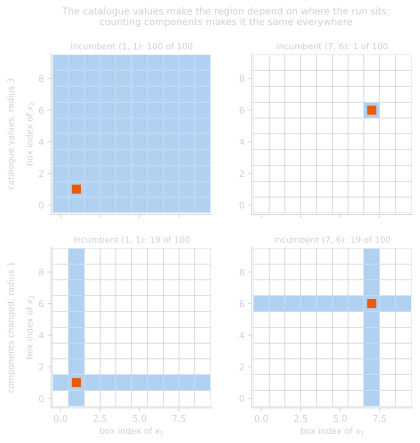
Figure 5. Trust region of the same two radii seen from two incumbents, with index weights and with unit weights.
In Figure 5, with index weights the region is the whole design space from the incumbent \((1,1)\) and the incumbent alone from \((7,6)\); with unit weights it contains the same nineteen boxes in both cases.
The design spaces of this package therefore use unit weights, \(w_j \equiv 1\), so
that the distance is the number of components changed by a candidate, i.e. the
Hamming distance between the one-hot encodings. The diameter is then \(n\), the
value returned by
max_step; it
is the radius beyond which the region no longer constrains the master, not the
radius to be used.
An ordinal proximity would require a different constraint, \(|v^\top\alpha' - v^\top\alpha| \le \texttt{max\_step}\) on the catalogue values \(v\), which the master does not build. This variant was evaluated with a stub in annex C and gave no improvement: neighbouring boxes are no more similar than distant ones, and the multimodality behaves as a categorical choice.
Radius#
The radius must be small. On Rastrigin with five variables and ten subdivisions, a radius of two components reaches the optimum from all starting points; a radius equal to the diameter of the design space, or no trust region, does not. The trust region is required for fine subdivisions, see the results and annex C.
Formulations of the sub-problem#
Box as a constraint#
The sub-problem keeps \(x\) as variable and the box is expressed as a vector-valued constraint of dimension \(2n\):
The dependence on \(\alpha\) is then accounted for by the term \(\lambda_g^\top \partial g/\partial \alpha\), and the slope is exact and analytic:
where \(\lambda^{u}_j, \lambda^{\ell}_j \ge 0\) are the multipliers of the upper and lower faces of the box.
\(g_{\text{box}}\) is linear in \(x\) and affine in \(\alpha\), hence jointly convex: the non-convexity remains confined to \(f\) and \(g\).
Box as normalized variables#
The sub-problem is solved for \(\xi \in [0,1]^n\), with
The box then defines the bounds of the sub-problem, which are the unit interval for every box, so that the assumption of the post-optimal analysis is satisfied. The slope is given by the partial derivative instead of the multipliers:
which is correct at an interior optimum, where \(\nabla_x f\) vanishes, and on a face, where \(\xi_j\) is fixed at a bound and the partial derivative equals the total derivative.
In this formulation \(x\) is bilinear in \((\xi, \alpha)\), so that the box selection enters the nonlinearity of the objective instead of a jointly convex constraint. In the experiments this has no adverse effect on the results: with the same master settings the normalized formulation reaches the optimum from all starting points and the constraint formulation from all but one, see the results.
Convexification#
Outer-approximation cuts are supporting hyperplanes only if \(u\) is convex. For a multimodal problem \(u\) is not convex, and a cut built at one box can lie above \(u\) elsewhere and exclude the global optimum. The master then converges rapidly to an incorrect solution without reporting an error.
Warning
The safeguard against this behaviour is the most important setting of the method,
and both available safeguards are disabled by default:
convexification_constant=0.0 and adapt=False. With these defaults, no
starting point of the benchmark reaches the global optimum, while the runs report
success.
The master provides two mechanisms, described below. They act differently and are not intended to be combined: either the fixed constant \(\kappa\), which carries the convergence guarantee, or the adaptive repair with its convexity margin, which reaches the optimum more often, the other being set to zero.
Convexification term#
gemseo-bilevel-outer-approximation adds to the objective a term that is convex
in the relaxed one-hot variables and vanishes at every integer point:
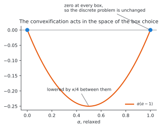
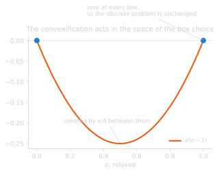
Figure 6. Convexification term over a relaxed box selection.
Each term \(\alpha(\alpha-1)\) is convex, equal to \(0\) for \(\alpha \in \{0,1\}\) and to \(-1/4\) for \(\alpha = 1/2\). Consequently:
the discrete problem is unchanged: for any feasible one-hot \(\alpha\), \(C(\alpha) = 0\) and \(\tilde u = u\), so that the optimum is that of the original problem;
the relaxation is lowered between the vertices, which restores the validity of the cuts; a sufficiently large \(\kappa\) dominates the non-convexity of \(u\) over the relaxed polytope.
In practice the term is not evaluated; only the slope of each cut is corrected by \(\nabla(\kappa C)\),
which at an integer point \(\alpha^{(i)}\) tilts the hyperplane by \(\pm\kappa/n_{\text{comp}}\) per component without changing its value at \(\alpha^{(i)}\).
Note
This convexification acts in the space of the box selection \(\alpha\); it is not an \(\alpha\)BB underestimator of \(f\) in the space of the design variables \(x\). It does not use bounds on the Hessian of \(f\) and does not become tighter as the boxes become smaller. A finer subdivision nevertheless helps for another reason: each box is closer to unimodal, so that the local solution is more likely to be the optimum of the box, as assumed by the cuts.
Adaptive convexification#
With adapt=True, the master corrects the slopes using the values already
computed instead of relying on \(\kappa\). For every pair of visited points, the cut
at \(\alpha^{(i)}\) must not overestimate the observed value at \(\alpha^{(j)}\):
where \(\delta\) is a convexity margin (min_dfk). The violations are collected and
a least-squares correction is applied to each slope, so that the cuts are
consistent with the whole history. This repair replaces \(\kappa\) rather than
complementing it: the margin \(\delta\) enforces the convexity that the constant
would otherwise impose, based on the observed values rather than on a worst case,
so that setting both applies the correction twice. Being a margin on the
objective, \(\delta\) is an absolute quantity in the units of \(f\) and must be scaled
to the problem, whereas \(\kappa\) scales with the relaxed polytope.
The two mechanisms differ in their guarantees. A sufficiently large \(\kappa\) makes the cuts valid by construction, which yields the convergence argument, but also lowers the lower bound of the master by nearly \(\kappa\), so that the bound does not meet the incumbent and the run terminates on the trust region rather than on the tolerance, see annex C. The adaptive repair keeps the lower bound usable and reaches the optimum from all starting points in the experiments, but it enforces convexity only with respect to the visited boxes and carries no guarantee.
Swept convexity#
Both mechanisms require a value in the units of the objective, of the order of the variation the cuts must dominate, which has to be supplied before any information on the objective is available. A margin of \(100\) reaches the optimum from all starting points on Rastrigin, whose range is about eighty, and gives the worst result among the tested values on Ackley, whose range is about twenty-two; no single value is suitable for both problems.
The master already avoids choosing its trust-region radius: it assigns one radius per parallel probe over \([\Delta/2, \Delta]\), so that its parallel probes form a sweep. The same probes can carry a ladder of convexity values \(\kappa_1 < \dots < \kappa_N\), geometric below an upper bound, with one rung per probe:
probe \(k\) solves the master with rung \(k\), so that one iteration covers the ladder. The two ladders are paired, the small trust region with the raw cuts and the large one with the dominated cuts, so that an iteration returns both an exploitative and an exploratory box;
a probe proposing a box already solved moves to the next rung, until it proposes a new box or the ladder is exhausted. Each step changes the cuts and costs one mixed-integer solution but no objective evaluation;
the exhaustion of the ladder by all probes is a stopping criterion: no convexity value up to \(\kappa_{\max}\) proposes an unsolved box.
Only the upper bound of the ladder remains to be supplied, and it can be derived from the spread of the objective values over the boxes already solved. Since the first boxes are few and may be similar on a broad basin, this estimate is multiplied by a dimensionless headroom factor of ten.
The sweep is a loop over the probes of the master and is implemented in the
master. This package provides
SweptBoxSubdivisionSettings, which
configures a run without calibrated values, and a driver that performs the sweep
from outside for master versions that do not implement it. The cost and results
of the sweep are given in the results and the
underlying measurements in
annex C.
Subdivision of a subset of the variables#
Not all variables need to be subdivided. A variable that is not subdivided remains a continuous variable of the sub-problem, which keeps the number of boxes small while subdividing the variables that require it:
subdivision = BoxSubdivision.from_design_space(design_space, 10, ["x_split"])
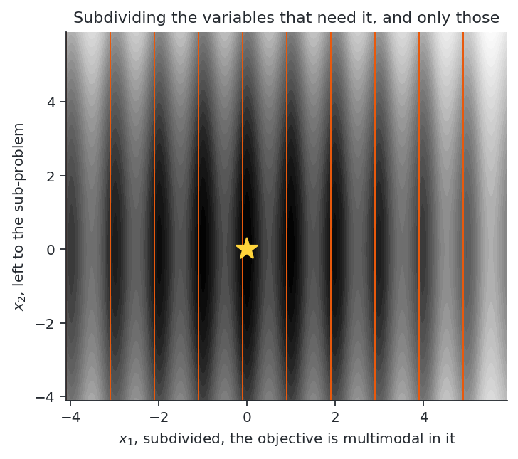
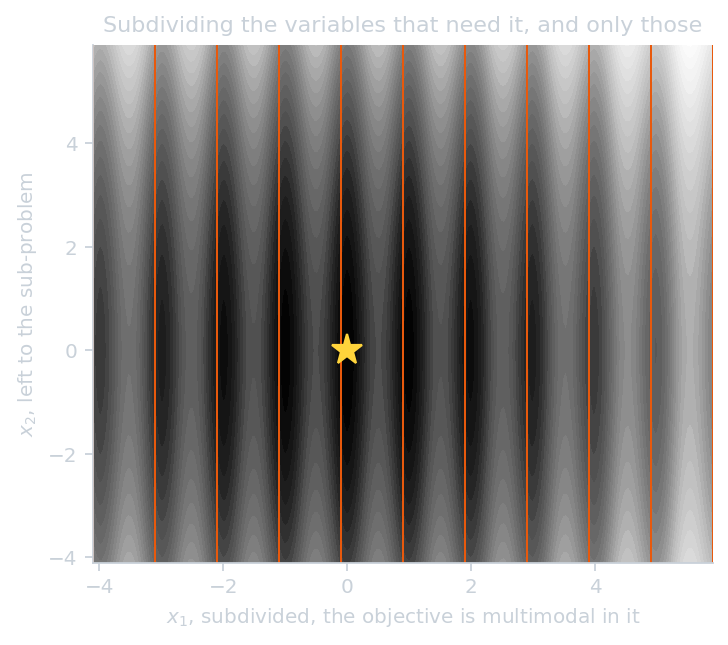
Figure 7. Subdivision of one variable only.
This is beneficial only when the objective is close to unimodal in the variables that are not subdivided, since all their basins remain within every box and the local solution returns the basin of its starting point. It is suited to problems whose multimodality is concentrated in a few variables, and not to problems that are multimodal in all variables.
Estimation of the subdivision density#
The method requires the subdivision to separate the basins of the landscape, and \(m_j\) is the only setting without a default value: a box that is too coarse contains several minima and a box that is too fine contains none, and the results show that no single value is suitable for the four problems. The density can be estimated from the objective.
The quantity to estimate is not a wavelength: the restriction of \(f\) to a line along \(e_j\) has a spectrum that depends on the position of the line, so that a period is not a property of the problem. The expected number of minima along such a line is, however, well defined for any \(C^1\) objective,
and is the number of basins a subdivision of the \(j\)-th component must separate, so that \(m_j = N_j\). This expectation is estimated by Monte Carlo integration over axial line scans: an anchor \(x_\perp\) is drawn at random, the component is swept over its bounds, and the sufficiently deep minima are counted.
A space-filling design cannot replace these scans. Averaging over the other components estimates the main effect \(\mathbb{E}[f \mid x_j]\), and multimodality due to interactions does not survive this average, as for Griewank (a product over all components) or Ackley (inside a norm).
The minima are selected by depth rather than curvature. A minimum is retained when its topographic prominence exceeds a fraction of the range of the scan, the prominence being measured with respect to the key saddle: moving outwards until the scan falls below the minimum again, the highest point crossed closes the basin, and the lower of the two sides gives its depth. Measured against the highest point on each side, every ripple inside a bowl would appear as deep as the bowl. A component without a sufficiently deep minimum is assigned a single interval, which yields a partial subdivision determined by the landscape.
The abscissae are drawn at random along the line. An evenly spaced scan resonates with a regular landscape and produces a consistent but incorrect count: on Ackley, whose ripples are about one unit apart, a uniform ladder reports a single basin at two consecutive rates, which a stopping rule interprets as convergence.
The error of the estimate is one-sided. A scan reveals the basins it resolves and no others, so that no finite sample bounds the roughness of an objective: a ladder of scan rates can establish a lower bound on the number of basins but not an upper bound. A ladder that does not converge therefore indicates that a subdivision with one box per basin is not appropriate, which is the case for which the hierarchies are designed; on the test problems this indicator selects them correctly.
When the basins are due to constraints, the same construction applies to the minima of \(f\) restricted to the feasible set. Along a line this set is a union of intervals, and the count decomposes into the minima retained within each maximal feasible interval and, for an interval without such a minimum, the interval itself, whose minimum lies on a boundary, i.e. where the active set changes. A single rule thus covers disconnected feasible sets and optima on a constraint.
The estimate assumes that the multimodality is visible to the scans. If only the objective is scanned, a landscape whose basins are due to the constraints yields a single interval per component and a converged ladder, since the objective has a single basin. Annex D reports the performance of the estimate on the test problems and its limitations.
Hierarchies of subdivisions#
A subdivision fine enough to separate the basins spends its budget over the whole design space. A hierarchy concentrates it: the space is subdivided coarsely, the boxes are ranked, and a promising box is refined with its own subdivision, recursively. Formally, a node of the hierarchy is a box \(B = [l, u]\), and its refinement consists in applying the method of the previous sections to \(B\) instead of the original design space, its children being the boxes of this subdivision. After two levels of \(m^{(1)}\) and \(m^{(2)}\) subdivisions the resolution is \(m^{(1)} m^{(2)}\) per variable, while no master has more than \(\sum_j m^{(k)}_j\) binaries.
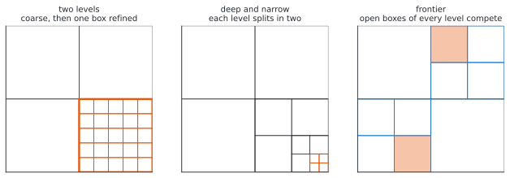
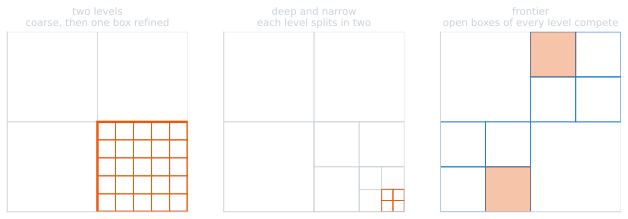
Figure 8. Three shapes of hierarchy.
Scores of a box#
The score of a box determines which box is refined. Two scores are available.
The value of a box is the optimum of its sub-problem, \(u(\alpha) = \min_{x \in B(\alpha)} f(x)\), as returned by the local solution. It is an upper bound on the true optimum of the box, since a local solution started at the centre of \(B\) returns the minimum of the basin it reaches. It is available only for the boxes actually solved, a few dozen at most.
The cut model is the lower envelope built by the master from these solutions,
where \(s^{(i)}\) is the post-optimal sensitivity of the sub-problem. It is defined for every box of the subdivision, including the unsolved ones, and is an optimistic estimate wherever the cuts are valid.
The two scores lead to opposite rankings. The value favours exploitation: it can only select a box already solved, and its ranking is not meaningful when a coarse box contains several basins, since the score then depends on the basin in which the centre lies. The cut model favours exploration: far from the solved boxes the cuts extrapolate linearly downwards, so that the lowest score belongs to a distant unvisited box.
Shapes of hierarchy#
Two levels: the coarse subdivision is solved, its boxes are ranked, and the best \(k\) boxes are refined, each with a share of the budget.
solve the coarse subdivision of the whole space
for each of the k best boxes:
solve a fine subdivision of that box
Deep hierarchy: each variable is divided in two at each of \(d\) levels and the best box is refined each time, which gives \(2^d\) subdivisions per variable with \(2n\) coefficients per level.
B <- the whole design space
repeat d times:
solve the subdivision of B in two per variable
B <- the best box of that subdivision
Frontier: the open boxes of all levels are kept in a priority queue, the most promising box is expanded, and its children are added to the queue.
frontier <- {the whole design space}
while the budget allows:
B <- the box of the frontier with the lowest score
solve the subdivision of B
push its most promising children onto the frontier
Only the frontier can revise a choice: in the first two shapes, the box refined at one level is the only region seen by the next level, and an incorrect score is never corrected. The frontier corresponds to a spatial branch-and-bound in which the cut model replaces the relaxation.
Cost of a hierarchy#
Each node is solved by its own master. With \(c\) the number of sub-problems affordable within the budget, a flat run uses all \(c\) cuts in one model of \(\sum_j m_j\) coefficients, whereas a hierarchy of \(N\) nodes uses \(c/N\) cuts in each of \(N\) models. Moreover, the cuts of a parent are expressed in the one-hot variables of its subdivision and have no meaning in the subdivision of a child, so that they are discarded at each refinement.
A hierarchy thus improves the ratio of coefficients to cuts at each level but discards the model to which this ratio applies. Avoiding this would require a master over a growing set of leaves, adding binaries when a box is split and keeping all cuts; this is a different master problem from the one used by this package, whose catalogue of boxes is fixed when the design space is created.
For this reason the hierarchies perform worse than the flat subdivision on problems that a flat subdivision can resolve. They perform better on a case the flat method does not resolve within the same budget, a basin too broad for the affordable densities. The single basin of Ackley spans a range of sixty, and the deep hierarchy, dividing each variable in two four times, reaches its optimum from four starting points of six, against two for the flat subdivision at its best density, both terminating on their own criteria. Each level has only \(2n\) coefficients, so that a quarter of the budget suffices to identify them, and the resolution reaches \(2^4\) per variable without any large level.
The results of the three shapes and of the two scores are given in annex D.
Multi-resolution encoding#
The hierarchies above place their levels in different masters, solved one after the other, which causes their cost. The levels can instead be placed in the same master, which keeps the resolution of a hierarchy without its cost.
Encoding#
A box is selected by one categorical variable per level instead of a single categorical variable over the whole subdivision. With \(L\) levels of \(m\) subdivisions each, the lower bound of a component is the sum of the fractions of the design space selected by its levels:
with \(\Delta_j = U_j - L_j\) and \(d_k \in \{0, \dots, m-1\}\) the interval selected by the \(k\)-th level, one-hot encoded. This is the base-\(m\) representation of the box index: the levels are its digits, the first level selecting the coarse region and each further level a sub-region within it.
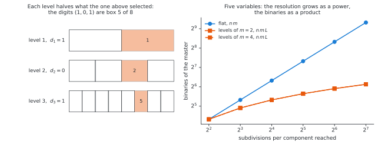
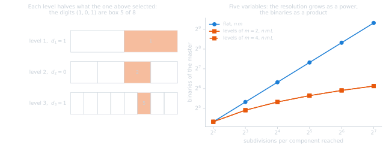
Figure 9. Levels as digits of the box index, and number of binaries against the resolution.
Properties#
The resolution grows as a power and the number of binaries as a product: the encoding gives \(m^L\) subdivisions per component with \(n m L\) binaries, whereas the flat encoding requires \(n m^L\).
resolution per component |
flat binaries, \(n=5\) |
levels, \(n=5\) |
|---|---|---|
\(16\) |
\(80\) |
\(40\) with \(m=2, L=4\); \(40\) with \(m=4, L=2\) |
\(64\) |
\(320\) |
\(60\) with \(m=4, L=3\) |
\(1024\) |
\(5120\) |
\(100\) with \(m=4, L=5\) |
Table 2. Number of binaries of the flat and multi-resolution encodings.
Since the density is limited by the number of binaries a budget can identify rather than by the number of boxes, this encoding raises that limit.
The bounds remain affine in the one-hot variables, and the width \(\Delta_j m^{-L}\) no longer depends on them, so that the mapping \(x = l(\alpha) + \xi \, \Delta \, m^{-L}\) is bilinear in \((\xi, \alpha)\), as for a single level, with constant Jacobian blocks. The bi-level formulation is unchanged.
A single master holds all levels, so that the cuts are kept and the master can change a coarse and a fine digit in the same iteration. This provides the backtracking that the descending hierarchies lack, without restart.
Limitations#
The cut model is linear in the one-hot variables and therefore additive over the digits: it represents the contribution of each level independently, but not the dependence of the effect of a fine digit on the coarse digit. On a multimodal landscape this dependence is always present, since the same fine offset has different effects in different regions, so that the model is misspecified, unlike the flat encoding, which has one coefficient per box index.
The trust region must be rescaled. The metric counts the one-hot groups changed by a candidate, and this encoding has \(nL\) groups instead of \(n\). A radius of two would allow the master to change two digits, which is much more restrictive than changing two variables, so that the radius is set to \(2L\) for a consistent comparison. With a radius equal to the diameter, i.e. without an effective trust region, the encoding appears considerably worse than it is.
The results are given in annex D.
Relation to spatial branch-and-bound#
The method can be viewed as a spatial branch-and-bound whose branching tree is fixed in advance and flattened into a single mixed-integer master, instead of being refined adaptively. A fixed subdivision is either too coarse, which weakens the lower bound, or too fine, which enlarges the master. Refining only the promising boxes would give a spatial branch-and-bound, at the cost of a master problem that grows during the run.
References#
Barjhoux, P.-J., Diouane, Y., Grihon, S., & Morlier, J. (2022). An outer approximation bi-level framework for mixed categorical structural optimization problems. Structural and Multidisciplinary Optimization, 65(8), 214.
Barjhoux, P.-J., Diouane, Y., Grihon, S., Bettebghor, D., & Morlier, J. (2020). A bi-level methodology for solving large-scale mixed categorical structural optimization. Structural and Multidisciplinary Optimization, 62(1), 337-351.
Duran, M. A., & Grossmann, I. E. (1986). An outer-approximation algorithm for a class of mixed-integer nonlinear programs. Mathematical Programming, 36(3), 307-339.